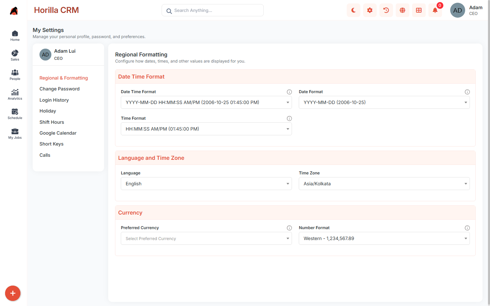

Introduction
Regional Formatting gathers the display preferences that decide how date and time values, interface language, time zone, currency and numbers appear in your CRM. The settings are personal to your own account and apply across every module.

Key Features and Functionalities
1.1 Date Time Format
Purpose: define how all date and time fields in the CRM are displayed.
- Pick a combined date-and-time format from the predefined options, for example YYYY-MM-DD HH:MM:SS.
- Fields that show only a date have their own format choice, for example Mon DD YYYY.
- Time can be displayed either in 12-hour AM/PM form or in 24-hour form.
- A change applies immediately to the date and time fields in leads, campaigns, contacts and activities.
1.2 Language and Time Zone Configuration
Purpose: set the interface language and the time zone used for time-sensitive data.
- The language dropdown changes the interface elements and labels.
- The time zone selection, for example GMT or PST, converts time-sensitive data automatically.
- This keeps the displayed time consistent for teams working in different time zones.
- It affects meeting schedules, campaign timing and activity timestamps.
1.3 Currency and Number Formatting
Purpose: set how currency and numeric values are displayed in financial fields.
- The currency selection, for example INR, USD or EUR, is applied to revenue and budget fields.
- The number format options control thousand separators and digit grouping.
- No Grouping displays a number without separators, such as 1000000.
- The grouped format displays separators, such as 1,000,000.
- These settings affect deal values, campaign budgets and financial reports.
1.4 Settings Application Scope
- The settings are user-specific: they change only your own display and never that of other users.
- Changes take effect without refreshing the page or logging out.
- The preferences persist across browser sessions.
- They apply to every module, including Leads, Contacts, Campaigns and Opportunities.